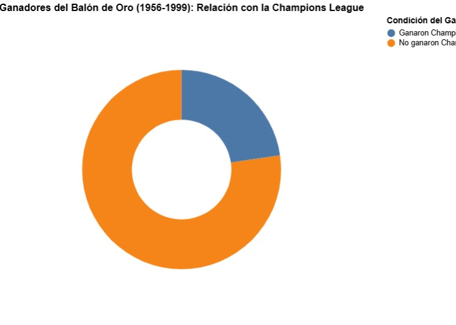
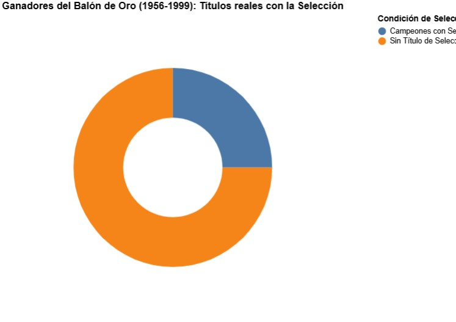

Cuando se habla del Balón de Oro, la creencia popular suele dictar una norma absoluta: para ser considerado el mejor jugador del mundo, es obligatorio levantar la Champions League o brillar con la selección nacional en un Mundial o Eurocopa. Sin embargo, al contrastar esta premisa con los datos históricos del periodo comprendido entre 1956 y 1999, la realidad del fútbol europeo resulta sorprendente y desafía las reglas no escritas del galardón.
Nuestra visualización de datos sobre los ganadores de la Copa de Europa arroja un dato revelador, donde apenas un 22,7% de los futbolistas que conquistaron el Balón de Oro levantaron la Champions League en esa misma temporada. Este porcentaje demuestra que, durante las primeras décadas del premio, la máxima gloria continental a nivel de clubes no era un requisito indispensable para la consagración individual. Figuras extraordinarias lograron cautivar a los votantes gracias a su constancia en las ligas locales, su desequilibrio en torneos domésticos o destellos de genialidad técnica que trascendieron la falta de un título europeo ese año específico.
Relación con la Champions League

Un escenario similar se observa al analizar el peso de los combinados nacionales. Al examinar los títulos oficiales con selecciones (Mundial, Eurocopa o Copa América) entre 1956 y 1999, los datos indican que solo un 25% de los ganadores del Balón de Oro lograron coronarse campeones con sus respectivos países en el año de su galardón. Esto evidencia que el votante histórico priorizaba el rendimiento continuado a lo largo de los meses por encima del éxito en un torneo de selecciones de corta duración.
Títulos con la Selección Nacional

En conclusión, los datos históricos de 1956 a 1999 revelan que el Balón de Oro no dependía exclusivamente de un gran título colectivo internacional. Lejos de la narrativa moderna donde la Champions League es un filtro casi obligatorio, el fútbol de aquellas décadas premiaba el talento puro y el impacto individual por encima de la vitrina de trofeos de sus equipos.